Лекар разобличава тайната на омазнения черен дроб, която индустрията на „хапчетата за черен дроб“ не иска да знаете...
Лекар разкрива „Наръчника на детокса“ — и защо мазнината в черния дроб, която имат около 7 от 10 души с наднормено тегло, не се „прочиства“ с хапчета, чайове и лимонена вода (и защо всяка капсула, която гълтате, първо натоварва точно черния дроб)

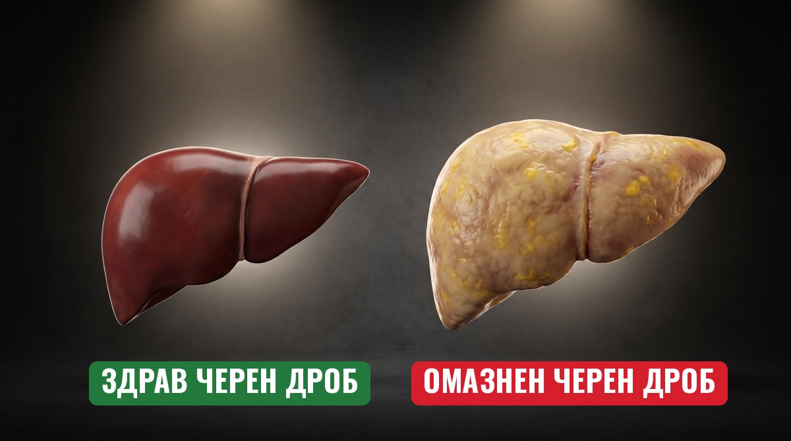
ВНИМАНИЕ: Омазненият черен дроб обикновено не боли. Ако коремът ви расте, а изследванията ви са „на границата“, прочетете това до края.
На път съм да ядосам всеки производител на „хапчета за черен дроб“, детокс чайове и „прочистващи“ програми в България.
Защото това, което ще споделя, може да им струва много пари.
Но вече не ме интересува.
След като години наред гледам жени, които почти не пият, да излизат от ехографа с диагноза „омазнен черен дроб“…
След като ги гледам как се срамуват, защото всички наоколо си мислят, че пият…
След като слушам как дават по 30–40 € на месец за хапчета, които трябва да „пазят“ черния дроб, докато мазнината в него продължава да се трупа…
Реших да кажа на глас това, което рядко се казва.
И ако четете това с изследвания „на границата“ в чекмеджето, с корем, който расте, въпреки че ядете малко, или с кутия хапчета за черен дроб в шкафа…
Следващите 5 минути могат да променят начина, по който гледате на здравето си.
Казвам се д-р Георги Марков.
Всяка седмица в кабинета ми влизат жени на 45, на 50, на 55 с една и съща ехография.
И съм на път да разоблича тайната, която държи хиляди българи в капана на „пий хапчетата и ще мине“ — докато мазнината в черния дроб тихо расте.
Но първо — нека ви разкажа за една ехография…
ДЕНЯТ, В КОЙТО ВСИЧКО СЕ ПРОМЕНИ...
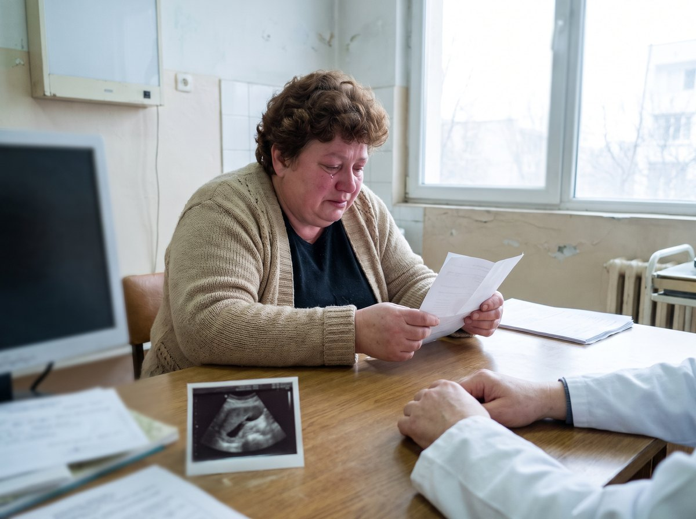
Елена беше на 51. (Името е променено. Историята ѝ е история на десетки жени, които виждам в кабинета си.)
Беше отишла на профилактичен преглед — „за спокойствие“, както каза.
Колегата погледна екрана на ехографа и написа две думи: „Омазнен черен дроб.“
И после зададе въпроса, който всеки лекар задава:
„Колко алкохол пиете?“
„Аз не пия — прошепна тя. — Чаша вино на Нова година.“
Медицинската сестра я погледна така, сякаш не ѝ вярва. Елена го видя. И го носеше в себе си седмици.
Вкъщи не каза на никого. Мъжът ѝ щеше да се пошегува. Свекърва ѝ — да намекне.
Когато седна при мен, държеше ехографията сгъната на четири — като нещо срамно.
Ензимите ѝ от последните изследвания бяха „леко завишени“. Казали ѝ: „Нищо страшно, пийте хапчета за черен дроб.“ Това беше преди година.
„Докторе, аз не пия. Ям малко. Защо черният ми дроб е като на човек, който пие?“
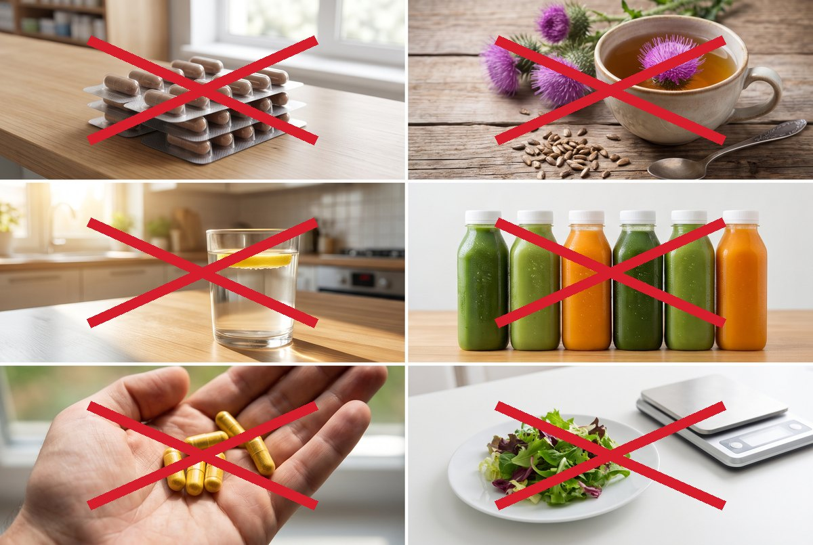
Беше опитала всичко, което ѝ бяха казвали:
- Хапчета „за черен дроб“ — Три месеца по три капсули на ден. Около 35 € на месец. Следващата ехография — същата.
- Бял трън — „Природният пазител на черния дроб.“ Чай сутрин и вечер, половин година. Нищо не се промени.
- Лимон с топла вода на гладно — Всяка сутрин, цяла година. Получи киселини.
- „Детокс“ на сокове — Три дни само на сокове. Трепереше от глад. Свали вода, не мазнина.
- Капсули с берберин — Прочела, че помагат. Подуване, газове, тежест. Спря ги след десет дни.
- Диета на 1200 калории — Свали 4 кг за месец. Върнаха се 5 за празниците.
Нищо не проработи за повече от няколко седмици.
„Съветите“ не бяха по-полезни:
В аптеката: „Вземете и това — за прочистване.“ Във Фейсбук групите: „Пийте ябълков оцет.“ Навсякъде: „Пийте хапчетата и елате след шест месеца.“
Никой не ѝ каза откъде идва тази мазнина. Никой не ѝ каза какво да направи с нея.
Тя седеше срещу мен — жена, която цял живот готви за цялото семейство, работи на смени, гледа внуци — и се срамуваше от диагноза, за която дори не знаеше какво значи.
Нещо в мен се пречупи.
Нямаше да гледам повече как жените в кабинета ми пият хапчета, които не променят нищо, и чакат следващата ехография със страх.
Нямаше да приема, че една жена трябва да се срамува от черния си дроб, когато вината не е в чашата ѝ.
Щях да разбера защо.
ОТКРИТИЕТО, КОЕТО ОБЪРНА ВСИЧКО
Седмици наред четох всичко, до което можех да стигна.
Мета-анализи. Рандомизирани проучвания. Големите анализи, обхванали милиони хора от цял свят.
И това, което открих, ме накара да искам да се извиня на всяка пациентка, на която съм казал просто „пийте хапчетата“.
Цялата индустрия на „хапчетата за черен дроб“ е построена върху една удобна лъжа.
Лъжата, че черният дроб трябва да бъде „прочистен“ или „защитен“ с хапчета.
Ето какво не искат да знаете:
Омазненият черен дроб НЕ е „замърсяване“, което се изчиства с детокс.
Това е мазнина, складирана ВЪТРЕ в чернодробните клетки — и тя идва от корема ви.
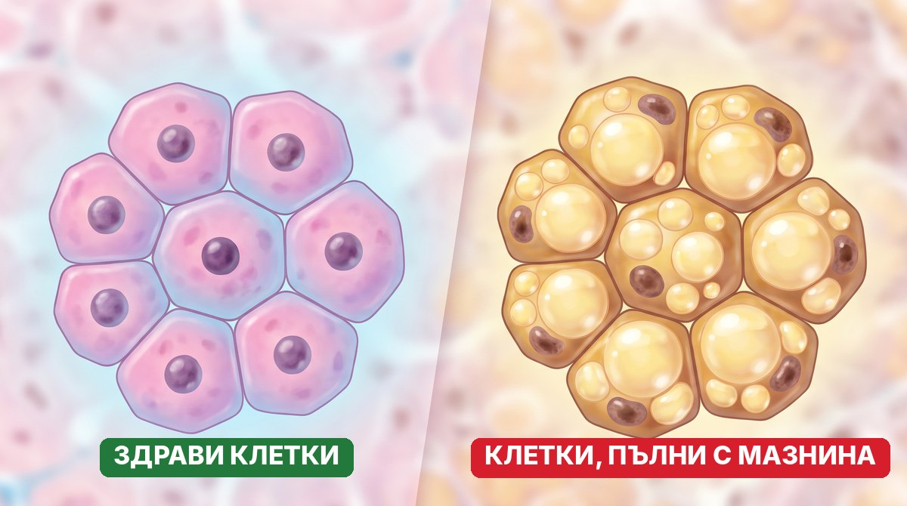
Около 1 на всеки 3 възрастни по света има омазнен черен дроб — и за 30 години те са станали с 50% повече.1
А при хората с наднормено тегло? Около 7 от 10.2
Повечето не знаят. Омазненият черен дроб не боли. Изследванията често са „на границата“. Вижда се на ехограф — ако някой изобщо погледне.
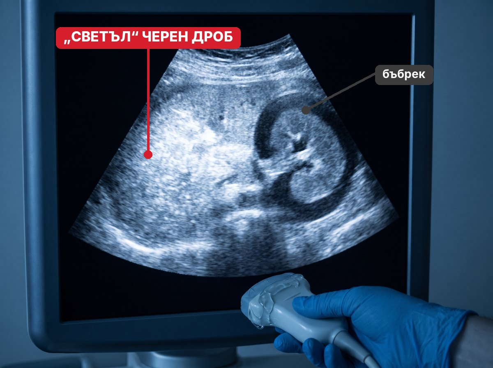
Затова лекарите му викат „светъл черен дроб“ — на ехографа мазнината свети в бяло.
Мазнината се е настанила в клетките — а индустрията ви продава чай, за да я „измие“.
ИСТИНСКАТА ПРИЧИНА ЗА ОМАЗНЕНИЯ ЧЕРЕН ДРОБ (КОЯТО КРИЯТ)
Нека го обясня така, че всеки да го разбере:
Представете си черния дроб като склад, а мазнината в корема ви — като камион, който кара стока към него денонощно.
Хапчетата „за черен дроб“? Те боядисват стените на склада.
Детоксът? Мие прозорците.
А камионът продължава да разтоварва.
Да чистите черния дроб с чайове е като да метете склада, докато камионът изсипва нова стока на прага.
Ето какво казва науката:
1. Мазнината в корема се влива директно в черния дроб.
Кръвта от червата и от мазнината около тях не отива първо в сърцето. Тя отива право в черния дроб — през голяма вена, наречена портална. Колкото повече мазнина има около органите, толкова повече мазнини се изливат направо в черния дроб.3
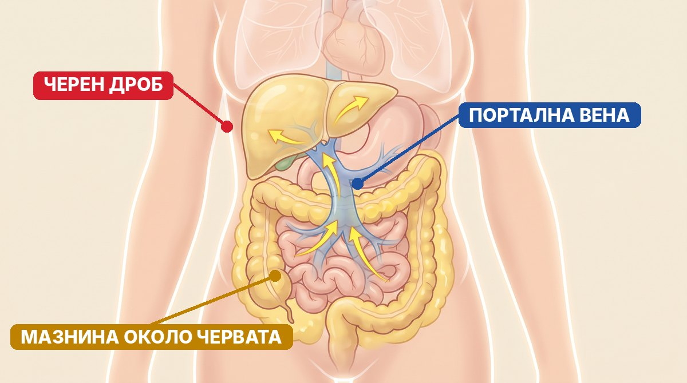
2. Това не е проблем само на черния дроб.
Хората с омазнен черен дроб имат с 64% по-висок риск от инфаркт и инсулт — а при по-тежките форми рискът е 2,6 пъти по-висок.4 В анализ на над 9 милиона души сърдечните смъртни случаи са били 4 пъти повече от чернодробните.1
А при 1 на всеки 5 души с наднормено тегло и омазнен черен дроб вече има значима фиброза — белези в черния дроб.2
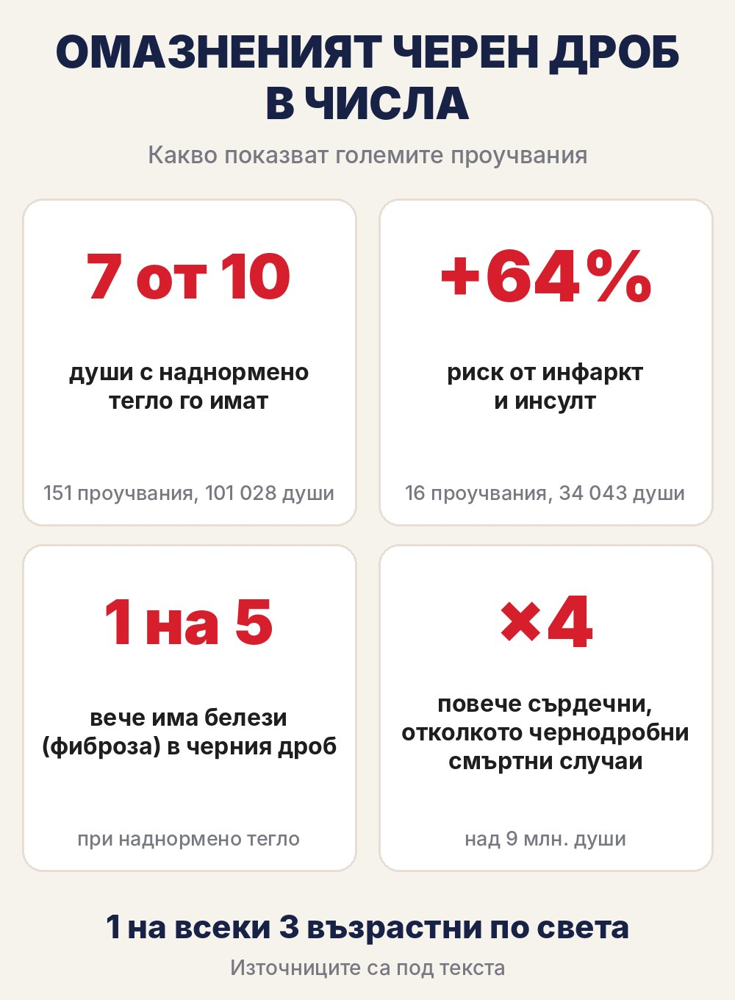
3. След 40 жените са на прицел.
В 4-годишно проучване жените, които минават през менопаузата, трупат мазнина около органите — а връстничките им, които още не са, не трупат. При първите способността на тялото да гори мазнини е спаднала с 32%.5
Ето защо толкова жени ми казват: „Ям както преди, а коремът расте.“
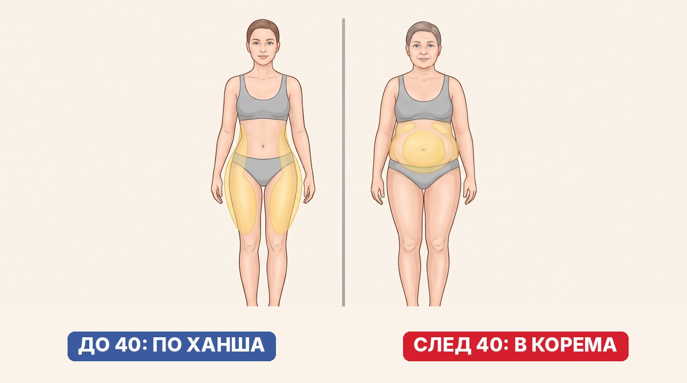
4. Тя се трупа всеки ден.
Захар, бял хляб, сладки напитки, стрес, безсъние — всеки ден камионът кара нова стока. Затова тридневният детокс не значи нищо. Мазнината не е натрупана за три дни.
И ето я уловката:
Всяка капсула, която глътнете — включително хапчетата „за черен дроб“ — първо минава през черния дроб.
Такъв е пътят на всичко глътнато: стомах → черва → портална вена → черен дроб. Едва после — в кръвта.
Тоест всяка сутрин молите един претоварен склад да обработи още една доставка.
А при берберина на капсули под 1% стига до кръвта — по-голямата част се губи в червата и в черния дроб.6

Знае се от години.
И продължават да ви продават капсули.
Ето „Наръчника на детокса“:
Хапчета „за черен дроб“ → Бял трън → Лимонена вода на гладно → Детокс на сокове → Още хапчета „за прочистване“ → Ехография след 6 месеца — същата → Повторение, докато не приемете, че „така е след 50“
Гениално, наистина.
Ако продавате хапчета.
ВТОРАТА ВРАТА, СКРИТА ПРЕД ОЧИТЕ НИ
Помните ли Елена, която държеше ехографията сгъната на четири?
Когато ѝ обясних какво всъщност има в черния ѝ дроб, за първи път от година тя не попита „кое хапче“.
Попита „откъде да започна“.
Ето истината, която всеки хепатолог знае:
Най-доказаният начин да намалите мазнината в черния дроб е да намалите мазнината в корема.
В проучване с 293 пациенти при тези, които свалят поне 5% от теглото си, възпалението в черния дроб изчезва при 58%. При 10% — при 9 от 10, а белезите намаляват при почти половината.7
5% при жена от 90 кг са 4,5 кг.
Не трябва да „прочиствате“ черния дроб. Трябва да спрете камиона.
За да започнете да работите срещу мазнината — а не само да „боядисвате склада“ — трябва да направите ЕДНО нещо:
ДА ЗАОБИКОЛИТЕ ПРЕТОВАРЕНИЯ ЧЕРЕН ДРОБ — и да подавате правилните съставки бавно, през целия ден.
Трябва ви нещо, създадено да:
- Не минава през стомаха, червата и първото преминаване през черния дроб — като всяка лепенка на кожата8
- Подава съставките постепенно, от сутрин до вечер — не всичко наведнъж
- Носи берберина — изследван и при хора с омазнен черен дроб
- Не изисква гладуване, сокове и гълтане на още хапчета

И знаете ли какво?
В рандомизирано проучване със 184 души с омазнен черен дроб тези, които към промяната в храненето и движението добавят берберин, намаляват мазнината в черния дроб с 52,7% — срещу 36,4% само с диета и движение.9
Свалят и повече килограми.
Това е мостът: ако берберинът показва такъв резултат дори когато под 1% от капсулата стига до кръвта — защо да го пращате през същия претоварен черен дроб?
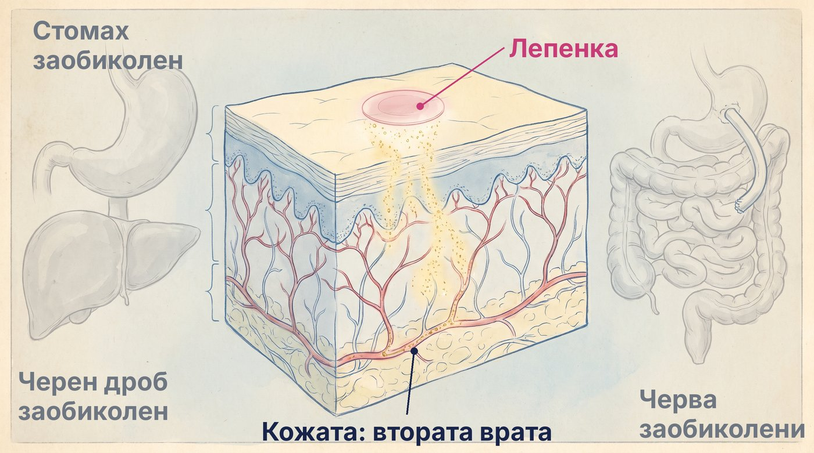
ТОЗИ ПРОБИВ ВБЕСЯВА ИНДУСТРИЯТА НА „ХАПЧЕТАТА ЗА ЧЕРЕН ДРОБ“
Докато аптеките ви продават поредната кутия „за прочистване“, нещо друго се случва тихо.
Над 600 души от цяла България вече поръчаха FitPatches.
От София, Пловдив, Бургас и Варна… до Пазарджик, Хасково, Кюстендил, Враца и Айдемир.
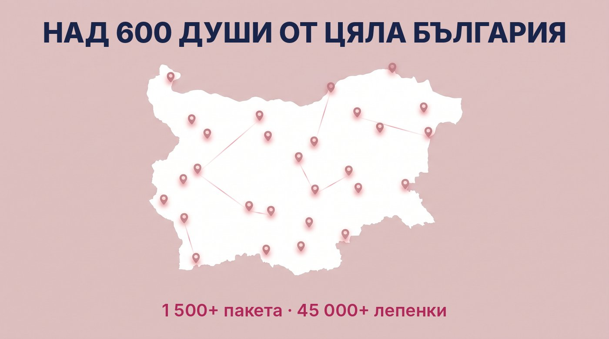
Това са над 1 500 пакета. Или иначе казано — над 45 000 лепенки.
Няма да ви кажа колко килограма е свалил всеки от тях. При всеки е различно и не обичам да лъжа.
Но над 600 души решиха да спрат да „прочистват“.
И да опитат през кожата, вместо пак през стомаха и черния дроб.
КОГАТО ЗАСЕГНЕШ ИНДУСТРИЯ ЗА МИЛИОНИ, ПЪРВО ИДВАТ СЪМНЕНИЯТА
Първото, което ще чуете за лепенките, е:
„Лепенките са измама.“
Затова FitPatches не искат нито стотинка предварително. Поръчвате, пратката идва, плащате на куриера, когато е в ръцете ви. Ако беше измама, щяха да искат парите ви преди това.

„Ще ти пратят обикновени пластири.“
Всяка лепенка FitPatches е розова, с размер на монета и с надпис „Fit Patches“ в кръг по ръба. Пълният състав е изписан на опаковката.
„Значи да спра хапчетата, които ми е дал лекарят?“
Не. Ако лекарят ви е предписал нещо — продължете. Лепенката не е лекарство и не замества лечение. Тя е помощник в ежедневието — срещу мазнината в корема, която пълни склада.
Странно как никой от тях не ви казва, че хапчетата им първо натоварват черния дроб.
ЛЕПЕНКАТА, КОЯТО ПЛАШИ ИНДУСТРИЯТА НА „ДЕТОКСА“
Казва се FitPatches.
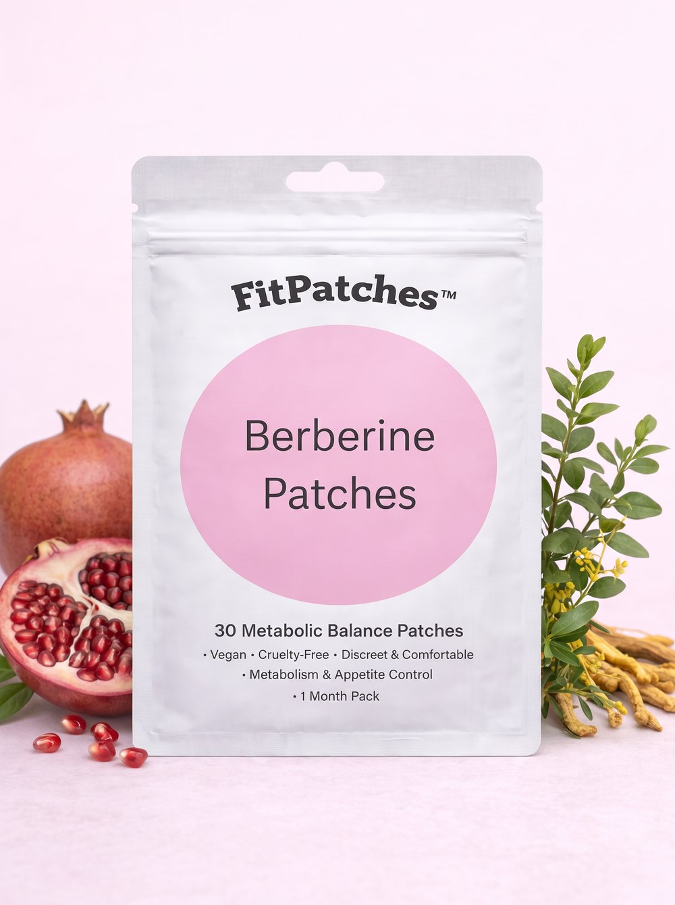
Не е поредното хапче „за черен дроб“.
Не е детокс чай с хубав етикет.
Не е капсула, която първо минава през черния дроб.
Създадена е за мазнината в корема, която пълни склада.
Ето какво я прави различна:
ВТОРАТА ВРАТА — Не се гълта. Подава съставките през кожата, без да минават през стомаха, червата и първото преминаване през черния дроб.
БЕРБЕРИН — „Превключвателят“. Жълтото вещество от корена на киселия трън, изследвано заради метаболитния превключвател AMPK. В проучване при хора с омазнен черен дроб — мазнината в черния дроб спада с 52,7% (при прием през устата, заедно с диета и движение).9 В мета-анализ на 12 рандомизирани проучвания намалява теглото средно с 2,07 кг.10
КАНЕЛА — В мета-анализ на 12 рандомизирани проучвания с 786 души: −2,40 см талия и −1,02% телесни мазнини.11
ХРОМ — Минерал, който допринася за нормалния метаболизъм на макроелементите.
L-ГЛУТАМИН — В малко пилотно проучване талията на жени спада от 102,7 на 98,9 см за 4 седмици, без промяна в храненето.12
НАР — Сред най-богатите естествени източници на полифеноли.
ВИТАМИНИ ОТ ГРУПА B — Допринасят за нормалния енергиен метаболизъм и за намаляване на умората и отпадналостта.
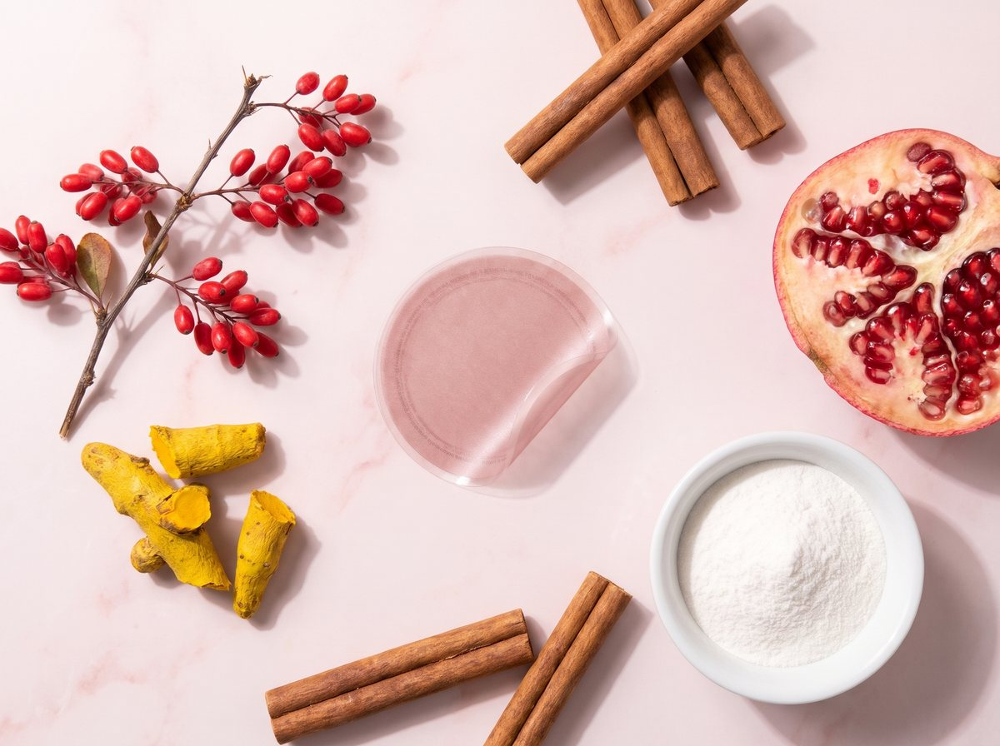
Ето нещо, което повечето хора не разбират — и което ми се иска всяка пациентка да чуе от първия ден:
Мазнината в черния дроб не се е натрупала за седмица. И не си отива за седмица.
Тя се трупа всеки ден — от годините, от стреса, от безсънието, от сладкото вечер. Затова и помощта трябва да е всеки ден.
Една лепенка сутрин. По-малко сладко и бял хляб. Повече ходене. Повече сън. Постоянство.
Ето какво описват повечето хора:
Първите дни: Свиквате с лепенката — сутрин я залепвате и забравяте за нея.
Седмица 1–2: Много клиенти казват, че вечер посягат по-рядко към сладкото и хапват по-спокойно.
Седмица 3–4: Вече е навик. Добавете по 10 минути ходене на ден.
Седмица 4–8: Тук много хора започват да виждат промяна — в колана, в дрехите, в енергията. При всеки е различно.
След 3 месеца: Ако сте свалили килограми, попитайте личния си лекар за контролна ехография.

ЦИФРИТЕ, КОИТО НЕ МОГАТ ДА ИГНОРИРАТ
За последната година:
- над 600 клиенти от цяла България
- 1 584 пакета
- 47 520 лепенки
А ето какво показват големите проучвания:
ЦЕНАТА, КОЯТО ПРЕДИЗВИКВА ПАНИКА
Нека ви покажа колко РЕАЛНО струва „грижата за черния дроб“ в България (приблизително):
Маршрутът „Аптеката“:
- Хапчета „за черен дроб“: 25–40 € × 12 = 300–480 €/година
- Бял трън, чайове, „прочистващи“ капки: 60–120 €/година
- Общо: до 600 € — и същата ехография
Маршрутът „Детокс“:
- Програми на сокове и „прочистващи“ кутии: 50–150 € на път
- Лимони, оцет, джинджифил всяка сутрин: още десетки евро
Маршрутът „Фитнес + шейкове“:
- Карта за фитнес: 30–60 € × 12 = 360–720 €/година
- Шейкове: 360–600 €/година
- Три посещения и гладни вечери

Индустрията ОБОЖАВА тези маршрути.
Знаете ли защо?
Защото се връщате.
Всеки месец. Всяка нова кутия. Вие не сте пациент — вие сте абонамент.
ЦЕНАТА „СРЕДЕН ПРЪСТ“ ЗА ИНДУСТРИЯТА: −50%
Редовната цена на един пакет FitPatches е 29,99 €.
Днес е 14,99 € — 30 лепенки, точно за един месец. Това е 0,50 € на ден.
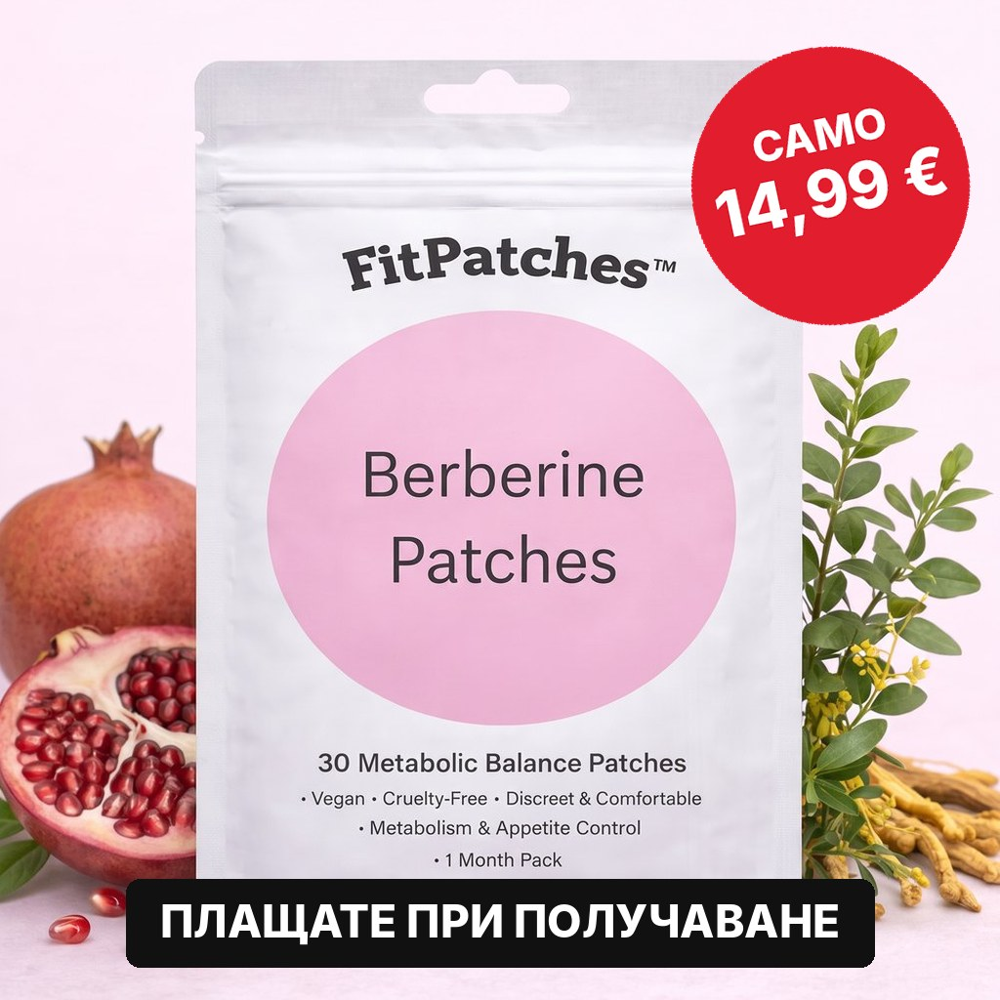
При 2 + 1 подарък: 27,99 € за три месеца — 0,31 € на ден.
При 3 + 2 подарък: 39,99 € за пет месеца — 0,27 € на ден.
По-малко от една кутия хапчета „за черен дроб“.
По-малко от един детокс на сокове.
По-малко от едно кафе на ден.
ПРОВЕРЕТЕ НАЛИЧНОСТТА⚠️ НО ЕТО ГОРЧИВАТА ИСТИНА
От Никулден до Йордановден са 32 дни трапези. Шаран. Сарми. Баница. Козунак. Сладко след всяко ядене.

За черния дроб това е най-тежкият месец в годината.
Повечето хора ще си кажат: „Ще започна след празниците.“
И ще посрещнат януари с още малко мазнина там, където огледалото не стига — и с кутия хапчета „за прочистване“ на масата.
Ако поръчате днес, до празниците ще имате няколко седмици навик.
Направете сметката.
МОЯТА ЛИЧНА ГАРАНЦИЯ: НЕ ДАВАТЕ НИЩО ПРЕДВАРИТЕЛНО
Вижте, разбирам ви.
Лъгани сте преди. Всички сме били.
Плащали сте предварително за хапчета, чайове и „прочистващи“ програми, които свършиха в шкафа.
Затова ето обещанието — и го пиша черно на бяло:
Няма предплащане. Поръчвате. Пратката идва. Плащате на куриера, когато е в ръцете ви.
Няма абонамент. Плащате веднъж за това, което поръчате. Без автоматични плащания.
Няма обещания за чудеса. Само постоянство и честност.
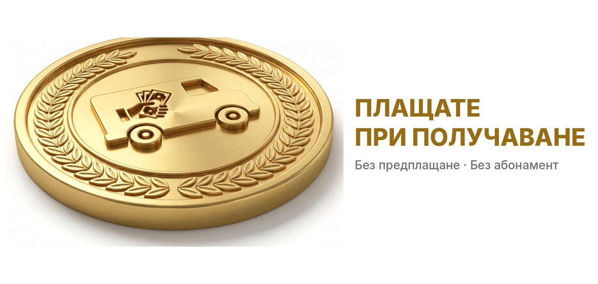
Пробвайте един пакет. Ако след месец не усетите разлика — просто не поръчвате пак.
РЕШЕНИЕТО, КОЕТО ЩЕ ОПРЕДЕЛИ СЛЕДВАЩОТО ВИ ДЕСЕТИЛЕТИЕ
В момента сте на кръстопът.
Път №1: Продължете както досега
Продължете да купувате хапчета, които първо натоварват черния дроб.
Продължете да „прочиствате“ склад, в който камионът разтоварва всеки ден.
Продължете да чакате следващата ехография със страх.
След 10 години ще сте на същото място — с повече мазнина в черния дроб и повече диагнози в папката.
Път №2: Опитайте нещо, което заобикаля претоварения черен дроб
Струва по-малко от кафе на ден.
Над 600 души в България вече минаха през втората врата.
Атакувайте ИСТИНСКАТА ПРИЧИНА — мазнината в корема, която пълни черния дроб.
Събудете се утре с план, вместо с поредната кутия хапчета.
Мисля, че знаете кой път води до следващата ехография без страх.
ЕТО ТОЧНО КАКВО СЛЕДВА
Стъпка 1: Натиснете зеления бутон „ПРОВЕРЕТЕ НАЛИЧНОСТТА“.
Стъпка 2: Изберете пакет:
→ 3 + 2 ПОДАРЪК — 39,99 € (0,27 € на ден). Пет месеца — достатъчно, за да превърнете лепенката в навик и да стигнете до контролната ехография.
2 + 1 ПОДАРЪК — 27,99 € (0,31 € на ден). Три месеца.
1 ПАКЕТ — 14,99 € (0,50 € на ден). Един месец, за да пробвате.
Стъпка 3: Попълнете име, телефон и адрес — ще ви се обадят за потвърждение.
Стъпка 4: Изчакайте 2–4 работни дни. Пратката идва с Еконт до адрес или офис.
Стъпка 5: Платете на куриера, когато е в ръцете ви.
Стъпка 6: Още на следващата сутрин залепете първата лепенка. Не чакайте понеделник.

Но каквото и да правите, не затваряйте тази страница с мисълта „ще видя по-късно“.
„По-късно“ е още една кутия хапчета „за прочистване“.
„По-късно“ е още една ехография, сгъната на четири.
„По-късно“ е още едни празници, след които „ще започнете“.
Черният ви дроб е чакал достатъчно.
Тялото ви е чакало достатъчно.
Решението е на едно кликване.
ПРОВЕРЕТЕ НАЛИЧНОСТТА [→ ПРОВЕРЕТЕ НАЛИЧНОСТТА — ПЛАЩАТЕ ПРИ ПОЛУЧАВАНЕ]С пожелание за здрав черен дроб,Д-р Георги Марков
P.S. — Ако никога не сте си правили ехография на корема — направете си. Отнема десет минути и не боли. Омазненият черен дроб не дава знак, докато не стане късно. Най-лошото, което може да ви се случи, е да научите, че всичко е наред.
P.P.S. — Никой не ви иска нищо предварително. Плащате на куриера, когато пратката е в ръцете ви. Единственото, което рискувате, е още една година „прочистване“.
P.P.P.S. — Ако пиете лекарства, предписани от лекар, не ги спирайте сами. Лепенката не е лекарство и не замества лечение — тя е помощник за всеки ден.
P.P.P.P.S. — Най-честата грешка, която виждам: хората слагат лепенката две седмици, не виждат чудо и спират. Мазнината в черния дроб не се е натрупала за две седмици. Дайте ѝ поне 4–8 седмици — една лепенка сутрин, по-малко сладко и повече ходене.
[→ ПРОВЕРЕТЕ НАЛИЧНОСТТА — 14,99 € ВМЕСТО 29,99 €]